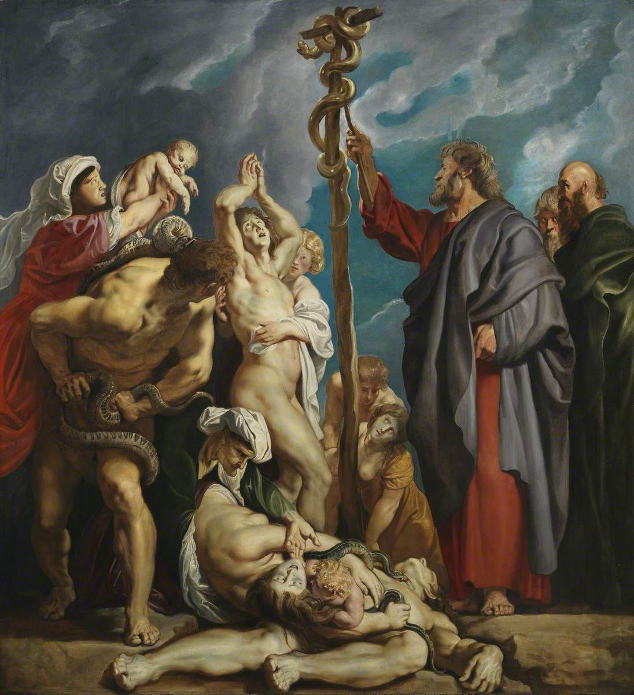

A Serpente de Bronze
Muitas vezes a Igreja Católica é acusada de idolatria pela leitura isolada do livro de Êxodo 20. No entanto, é necessário ler a Bíblia em sua totalidade.
No livro de Números 21, o próprio Deus ordena a Moisés: "Faze uma serpente de bronze e coloca-a sobre uma haste". Deus não proibiu a criação de imagens em si, mas sim a criação de ídolos (falsos deuses) para adoração.
A imagem da serpente foi usada por Deus como um canal de cura para o povo, prefigurando o próprio Cristo na cruz. Assim como os israelitas olhavam para a imagem de bronze e eram curados, nós olhamos para as imagens sagradas para nos lembrarmos dos mistérios celestes.